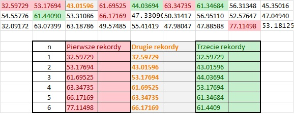

Twierdzenie o wariancjach spacji rekordów
Niech $X_1, X_2, \ldots$ będą niezależnymi zmiennymi losowymi mającymi tą samą ciągłą dystrybuantę $F$.
Załóżmy, że $X_{i:n}$ oznacza $i$-tą statystykę pozycyjną otrzymaną z pierwszych $n$ obserwacji.
Dla danego $k \in \mathbb{N}$, $n$-ty czas wystąpienia $k$-tego rekordu $T_{n,k}$ oraz $n$-ta wartość $k$-tego rekordu $R_{n,k}$ zostały zdefiniowane
w 1976 przez polskich matematyków Dziubdzielę i Kopocińskiego w następujący sposób:
$T_{1,k}=1$ i $T_{n+1,k}=\min\{j>T_{n,k}\!\colon X_{j:j+k-1}>X_{T_{n,k}:T_{n,k}+k-1}\}$, $n \in \mathbb{N}$, oraz $R_{n,k}=X_{T_{n,k}:T_{n,k}+k-1}$.
$n$-tą spacją wartości $k$-tych rekordów nazywamy różnicę $R_{n+1,k}-R_{n,k}$.
Wartości rekordów mają zastosowanie w przewidywaniu katastrof jak również prognozowaniu zdarzeń ekstremalnych w naturze i sporcie.
Oto próbka z rozkładu normalnego o średniej $50$ i odchyleniu standardowym $10$ wraz z pierwszymi sześcioma wartościami pierwszych, drugich i trzecich rekordów.

Poniżej przedstawiam Twierdzenie 3.1 z artykułu P. Kozyra, T. Rychlik, Upper and lower bounds on the variances of linear combinations of kth records (2017), DOI: 10.1080/02331888.2017.1343828. Statistics
A Journal of Theoretical and Applied Statistics, 1-28, dotyczące optymalnych górnych oszacowań wariancji spacji wartości $k$-tych rekordów wyrażonych
w jednostkach wariancji zmiennej losowej $X_1$.
Twierdzenie
Niech $X_1,X_2,\ldots$ będą niezależnymi zmiennymi losowymi o tej samej ciągłej dystrybuancie, i załóżmy, że $\mathbb{E}X_1^2<\infty$ i
$\mathbb{E}R_{m+1,k}^2<\infty$.
Niech ponadto
$$\begin{equation}\Phi_{m,k}(u,v)= \frac{[-k\ln(1-u)]^m (1-v)^{k-1}}{u m!}\left[ 1 -\frac{(1-u)^k [-k\ln(1-v)]^m}{m!}\right],\label{1}\end{equation}$$
oraz $\Psi_{m,k}(u)=\Phi_{m,k}(u,u)$.
Wówczas
$$\frac{\mathbb{V}ar( R_{m+1,k}-R_{m,k})}{\mathbb{V}ar \,X_1} \leq \sup_{0<u<1}\Psi_{m,k}(u),$$
i ograniczenie to jest optymalne.
W szczególności zachodzą następujące własności:
- Jeśli $k=1$ i $m \geq 1$, to
$$\frac{\mathbb{V}ar( R_{m+1,1}-R_{m,1})}{\mathbb{V}ar \,X_1} \leq \lim_{u\nearrow 1}\Psi_{m,1}(u)= +\infty ,$$
i to górne ograniczenie jest osiągane przez ciąg rozkładów opisanych w Twierdzeniu 2.1(iii) z powyższego artykułu.
- Jeżeli $m=1$ i $k \geq 2$, to
$$\frac{\mathbb{V}ar( R_{2,k}-R_{1,k})}{\mathbb{V}ar \,X_1} \leq \lim_{u\searrow 0}\Psi_{1,k}(u)=k ,$$
i to ograniczenie jest osiągane przez ciąg rozkładów opisanych w Twierdzeniu 2.1(ii).
- Jeśli albo $k=2\leq m$ albo $k \geq 3$ oraz $2 \leq m \leq \frac 23k $, wtedy
$$\frac{\mathbb{V}ar( R_{m+1,k}-R_{m,k})}{\mathbb{V}ar \,X_1} \leq \Psi_{m,k}(u_0),$$
gdzie $u_0=u_0(m,k)$ jest jedynym rozwiązaniem równania $\Psi'_{m,k}(u)=0$,
oraz równość jest osiągana przez ciąg rozkładów opisanych w Twierdzeniu 2.1(i).
- Jeśli $k \geq 3$ oraz $ m > \frac 23k $, to
$$\frac{\mathbb{V}ar( R_{m+1,k}-R_{m,k})}{\mathbb{V}ar \,X_1} \leq \Psi_{m,k}(u_0),$$
gdzie $0<u_0<1$ argumentem maksimum globalnego funkcji $\Psi_{m,k}$ na przedziale $(0,1)$, oraz warunki osiągalności są przedstawione w Twierdzeniu 2.1(i).
Dowód tego twierdzenia należy do moich najtrudniejszych i najbardziej pomysłowych jakie dotychczas stworzyłem.
W dowodzie tego twierdzenia oczywiście korzystam z Twierdzenia 2.1 w celu ustalenia górnego oszacowania ilorazu
$\frac{\mathbb{V}ar( R_{m+1,k}-R_{m,k})}{\mathbb{V}ar \,X_1}$. Tym oszacowaniem jest $\sup_{0<u<v<1}\Phi_{m,k}(u,v)$.
Aby udowodnić to twierdzenie musiałem również wymyślić dwa lematy 4.1, 4.2 oraz zastosować lemat 4.3 pochodzący z artykułu
P. Kozyra, T. Rychlik, Sharp bounds on the expectations of linear combinations of kth records expressed in the Gini mean difference units, accepted. PROBABILITY
AND MATHEMATICAL STATISTICS.
Lemma 4.1
Let
$$f_{n,M}(x)=e^x-M\frac{x^n}{n!}$$
be defined on the non-negative half-axis for fixed real $M$ and non-negative integer $n$. Then $f_{0,M}(0)=1-M$ and $f_{n,M}(0)=1$ for $n \in \mathbb{N}$. Also,
$\lim_{x \nearrow \infty}f_{n,M}(x)=+\infty$ for every $n\in\mathbb{N}_0$ and $M\in\mathbb{R}$.
Moreover, we have the following.
(i) Function $f_{0,M}$ is strictly increasing everywhere.
(ii) If $M\leq 1$, then $f_{1,M}$ also increases, and otherwise there exists $x_0>0$ such that $f_{1,M}$ decreases on $(0,x_0)$ and increases on $(x_0,\infty)$.
(iii) Let $n\geq 2$.
If either $M\leq 1$ or $M>1$ and $\min_{x>0}f_{n-1,M}(x)\geq 0$, then $f_{n,M}$ is increasing.
If $M>1$ and $\min_{x>0}f_{n-1,M}(x)< 0$, then there exist $0< x_1< x_2 <\infty$ such that $f_{n,M}$ increases on $(0,x_1)$, decreases on $(x_1,x_2)$, and finally increases on $ (x_2,\infty)$.
Proof. Calculating the left- and right-end values is immediate. Also, claim (i) is trivial since $f'_{0,M}(x)= e^x>0$, $x>0$.
Note that $f_{n+1,M}'=f_{n,M}$ for all $n\in\mathbb{N}$.
(ii) We have $f'_{1,M}(x)= e^x-M$.
If $M \leq 1$, then $f_{1,M}$ is strictly increasing and positive. Otherwise,
it is decreasing on $(0,x_0)$ with $x_0=x_0(1)=\ln M$, and increasing elsewhere.
(iii) Suppose first that $n=2$.
If $M\leq 1$, then $f'_{2,M}=f_{1,M}>0$, and, due to (ii), $f_{2,M}$ is increasing from 1 to $\infty$.
If $M>1$ and $\min_{x>0} f_{1,M}(x)= f_{1,M}(\ln M) \geq 0$, then by the latter statement of (ii), $f_{2,M}$ is increasing as well.
For $M>1$ with $ f_{1,M}(\ln M)<0$, by the same argument, there exist $0< x_1=x_1(2) <x_0(1) < x_2=x_2(2)$ such that
$f'_{2,M}(x_i)=f_{1,M}(x_i)=0$, $i=1,2$, and, consequently, $f_{2,M}$ is increasing on $(0,x_1)\cup (x_2,\infty)$,
and decreasing on $(x_1,x_2)$. It means that conditions of (iii) are satisfied for $n=2$.
Assume now that (iii) holds for some $n\geq 2$.
We conclude the same for $n+1$.
If $M \leq 1$, then $f'_{n+1,M}(x)=f_{n,M}(x)$ increases on $\mathbb{R}_+$ from 1 to $\infty$, and so does $f_{n+1, M}$.
If $M>1$ and $\min_{x>0} f_{n,M}(x) = f_{n,M}(x_0(n))\geq 0$, then
$f'_{n+1,M} (x)$ is positive (except for possibly at $x_0(n)$ when $f_{n,M}(x_0(n))= 0$), and so
$f_{n+1,M}$ is increasing function.
If finally $M>1$ and $f_{n,M}(x_0(n))< 0$, then there are $0< x_1=x_1(n+1)< x_0(n) < x_2=x_{2}(n+1) < \infty$ such that $f_{n+1,m}$ is increasing, decreasing, and increasing in $(0,x_1)$, $(x_1,x_2)$, and
$(x_2,\infty)$, respectively. $\blacksquare$
Lemma 4.2
Let $f$ and $g$ be polynomials, $r(x) =\frac{g(x)}{f(x)}$, $n \in \mathbb{N}$, and
$$h(x)=f(x)e^x-g(x)\frac{x^n}{n!}, \qquad x\geq 0.$$
(i) If $\lim_{x\to\infty}f(x)=\infty$, $x_f=\max\big\{x\in\mathbb{R}\colon f(x)=0\big\}\geq n$, $g(x_f)>0$, and $r'(x)<0$ for $x>x_f$,
then there exists $x_h>x_f$ such that $h$ is negative on $(x_f,x_h)$, and positive on $(x_h,\infty)$.
Moreover, function $h(x)$ is increasing on $(x_h,\infty)$ under additional assumption that $f'(x)>0$ for $x>x_h$.
(ii) If $f(0)>0$, $0< x_f=\min\big\{x\in \mathbb{R}\colon f(x)=0\big\}\leq n$, $g(x_f)>0$, and $r'(x)>0$ for $0< x<x_f$,
then there exists $0< x_h<x_f$ such that $h$ is positive on $(0,x_h)$, and negative on $(x_h,x_f)$.
Proof.
(i)
Note that $h(x_f)=-g(x_f)\frac{x_f^n}{n!}<0$ and $\lim_{x\to\infty}h(x)=\infty$. Hence
the function has some zeros in $(x_f,\infty)$. Let $x_h$ denote the smallest of them.
Obviously, $h$ is negative on $(x_f,x_h)$.
Define now $\varphi(x) =\frac{h(x)}{f(x)}= e^x - r(x)\frac{x^n}{n!}$, $x>x_f$, and $\psi(x) = e^x- M\frac{x^n}{n!}$ with $M=r(x_h)$.
Note that $f(x_h)>0$, and $\psi(x_h)=\varphi(x_h) = \frac{h(x_h)}{f(x_h)} =0$.
By assumption, $r(x) <r(x_h)=M$, $x>x_h>x_f$, and so
$$\varphi(x) = e^x- r(x) \frac{x^n}{n!} > e^x- M \frac{x^n}{n!} = \psi(x), \qquad x> x_h.$$
Observe further that
$$\psi'(x_h)= e^{x_h}- M \frac{x_h^{n-1}}{(n-1)!}>0 = \psi(x_h)= e^{x_h}- M \frac{x_h^{n}}{n!}$$
iff $M< M \frac{x_h}n$. If $M\leq 1$, then by Lemma 1 (ii) and (iii) $\psi$ increases from 1 at 0 to
$\infty $ at $\infty$, which contradicts $\psi(x_h)=0$.
Therefore condition $\psi'(x_h)>0$ is equivalent with $x_h>n$ which is true due to inequalities $n \leq
x_f <x_h$.
By Lemma 1 again, relations $0= \psi(x_h) <\psi'(x_h) $ imply that $\psi(x) >0$ for all $x>x_h$,
and so is $\varphi(x)= \frac{h(x)}{f(x)}$. By positivity of $f$ on $(x_f,\infty)$, $h(x)>0$ for $x>x_h$
as well.
Furthermore, note that for $x>x_h$ yields
\begin{eqnarray*}
\varphi'(x)& = & e^x- r'(x) \frac{x^n}{n!} - r(x) \frac{x^{n-1}}{(n-1)!}
> e^x - r(x) \frac{x^{n-1}}{(n-1)!} \\ & > & e^x - r(x_h) \frac{x^{n-1}}{(n-1)!}= \psi'(x)>0,
\end{eqnarray*}
and consequently,
under condition $f'(x)>0$, $x>x_h$, we have $h'(x) = f'(x) \varphi(x) + f(x) \varphi'(x)>0$, $x>x_h$, as well.
(ii) The proof is based on similar ideas. Since $h(x_f)=-g(x_f)\frac{x_f^n}{n!}<0<f(0)=h(0)$, and
$h$ is continuous, it has some zeros in $(0,x_f)$. Let $x_h$ be the greatest of them.
Clearly, $h<0$ on $(x_h,x_f)$. Functions $\varphi(x) = e^x - r(x)\frac{x^n}{n!}$ and
$\psi(x) = e^x - M\frac{x^n}{n!}$ with $M=r(x_h)$ vanish at $x_h$.
Inequality $\varphi(x)>\psi(x)$, $0<x<x_h$, follows from condition
$r'(x)>0$, $0<x<x_f$. Relation $M\leq 1$ implying positive increase of $\psi$ on $\mathbb{R}_+$
contradicts $\psi(x_h)=0$. When $M>1$, conditions $x_h<x_f\leq n$ imply $\psi'(x_h)<\psi(x_h)=0$. Due to Lemma
1(ii) and (iii), and the last relations, $x_h$ is the first zero of $\psi$, and this is positive on
$(0,x_h)$. Therefore so is $\varphi(x) = \frac{h(x)}{f(x)}>\psi(x)$ there.
Positivity of $h$ on $(0,x_h)$ follows from positivity of $f$ in $(0,x_f) \supset (0,x_h)$.
$\blacksquare$
Lemma 4.3 [Kozyra and Rychlik, 2016]
Let $\psi\colon (a,b)\to\mathbb{R}$, $0\leq a<b$, be twice differentiable function,
$\Psi(x)=\psi(x)/x$ and $\chi(x)=x^2\Psi'(x)=x\psi'(x)-\psi(x)$ with $\chi'(x)=x\psi''(x)$. We have the following.
- If $\psi$ is positive and decreasing, then $\Psi$ decreases.
- If $\psi$ is negative and increasing, then $\Psi$ increases.
- Assume that $\psi$ is convex.
- If $\lim_{x\nearrow b^-} \chi(x)\leq 0$, then $\Psi$ is decreasing.
- If $\lim_{x\searrow a^+} \chi(x)\geq 0$, then $\Psi$ is increasing.
- If $\lim_{x\searrow a^+} \chi(x)< 0 <\lim_{x\nearrow b^-} \chi(x)$, then there exists $c\in(a,b)$ such that $\Psi$ decreases on $(a,c]$ and increases on $[c,b)$.
- Suppose that $\psi$ is concave.
- If $\lim_{x\searrow a^+} \chi(x)\leq 0$, then $\Psi$ is decreasing.
- If $\lim_{x\nearrow b^-} \chi(x)\geq 0$, then $\Psi$ is increasing.
- If $\lim_{x\searrow a^+} \chi(x)>0 >\lim_{x\nearrow b^-} \chi(x)$, then there exists $c\in(a,b)$ such that $\Psi$ increases on $(a,c]$ and decreases on $[c,b)$.
Proof of Theorem 3.1.
We start with proving
that
$$\Phi_{m,k}(u,v) < \Phi_{m,k}(u,u)= \Psi_{m,k}(u), \qquad u<v<1,$$
for every fixed $0<u<1$.
The two-variable function \ref{1}, defined above, is represented as the product of two factors.
The first one is obviously non-increasing in $v$ (constant for $k=1$ and decreasing otherwise), and positive for all $u< v<1$.
The latter is also decreasing. In order to show its positivity, we note that
\[
1- (1-u)^k\frac{[-k\ln(1-u)]^m}{m!} > 1- (1-u)^k\sum_{i=0}^m \frac{[-k\ln(1-u)]^i}{i!}=G_{m+1,k}(u)>0.
\]
The product of positive non-increasing and positive decreasing functions is positive decreasing.
It follows that
\[
\sup_{0< u \leq v <1}\Phi_{m,k}(u,v) = \sup_{0< u <1}\Psi_{m,k}(u).
\]
By Theorem 1, the upper bound is sharp.
In order to determine its attainability conditions, it suffices to find the arguments for which functions
$\Psi_{m,k}$ attain their suprema.
(i) Assume first that $k=1$. Then
\[
\Psi_{m,1}(u)= \frac{[-\ln(1-u)]^m }{u m!}\left[ 1 -\frac{(1-u) [-\ln(1-u)]^m}{m!}\right].
\]
As $u \nearrow 1$, the first term increases to $+\infty$, whereas the other one tends to $1$.
Therefore the upper bound trivially equals to $+\infty$.
Since
\[
\sup_{0< u <1}\Psi_{m,k}(u)= \lim_{u \nearrow 1}\Psi_{m,k}(u),
\]
the attainability conditions are presented in Theorem 1(iii).
(ii)
We start with analyzing case $m=1$ with $k=2$.
Then
\[
\Psi_{1,2}(u)= \frac{-2(1-u)\ln(1-u)] }{u} \left[ 1 +2(1-u)^2\ln(1-u)\right] = f(u)g(u), \quad 0<u<1,
\]
say. We have $f'(u)=\frac 2{u^2}h(u)$ with $h(u)=u+\ln(1-u)$.
Since $h(0)=0$ and $h'(u)=-\frac{u}{1-u}<0$, derivative $f'$ is decreasing and negative. Function $f$
is decreasing as well, and positive with $\lim_{u\searrow 0} f(u)=2$ and $f(1)=0$.
The latter function has derivative $g'(u)= 2(1-u)[-2\ln(1-u)-1]$, and so is decreasing in
$(0,1-e^{-1/2})$ and increasing in $(1-e^{-1/2},1)$. Its maximums are $g(0)=g(1)=1$. Therefore
\[
\sup_{0< u <1}\Psi_{1,2}(u)=\lim_{u \searrow 0}\Psi_{1,2}(u)= \lim_{u \searrow 0}f(u)g(u)=2.
\]
This proves (ii) for $k=2$.
For the other cases $m=1$ with $k \geq 3$, and $m\geq 2$ with $k\geq 2$, we first analyze functions
$\psi_{m,k}(u)=u \Psi_{m,k}(u)$. Then we obviously have
$\lim_{u \searrow 0} \psi_{m,k}(u)=\lim_{u \nearrow 1} \psi_{m,k}(u)=0$.
We first show that each $\psi_{m,k}$ is first increasing and then decreasing in $(0,1)$.
We write down the derivative
$$\begin{eqnarray}
\psi'_{m,k}(u) & = & (1-u)^{2k-2}\frac{\big[-k\ln(1-u)\big]^{m-1}}{m!}\Bigg\{
\frac{m k-(k-1)\big[-k\ln(1-u)\big]}{(1-u)^{k}}\nonumber \\
&-&\frac{[-k\ln(1-u)]^{m}\big[2 m k - (2k-1)[-k\ln(1-u)]\big]}{m!}\Bigg\} .
\label{16}
\end{eqnarray}$$
Consider the strictly increasing variable transformation $x:(0,1) \mapsto \mathbb{R}_+$ defined as
$x(u)= -k\ln(1-u)$, with the inverse $u(x)=1-\exp(-x/k)$. We have
$$\begin{equation}
\chi_{1,m,k}(x) \!=\! \psi'_{m,k}(u(x))\!=\! -\frac{x^{m-1}}{m!} \exp\!\left( \!- \frac{2(k\!-\!1)x}k \right)\!
\left[f_{1,m,k}(x) e^x \!-\! g_{1,m,k}(x) \frac{x^m}{m!} \right]\!\!,
\label{17}
\end{equation}$$
where
$$\begin{eqnarray}
f_{1,m,k}(x)& = & (k-1)x -km, \label{18} \\
g_{1,m,k}(x)& = & (2k-1)x -2km, \qquad x>0. \label{19}
\end{eqnarray}$$
We denote the expression in the brackets of \ref{17} by $h_{1,m,k}(x)$.
We now prove that function $h_{1,m,k}(x)$, $x>0$, is first negative and then positive.
This would imply that \ref{17} and \ref{16} are first positive, and ultimately negative
in their domains, as desired.
Functions \ref{18} and \ref{19} are initially negative and then positive, and their zeros are
$x_{f}(m,k)= \frac k{k-1}m$ and $x_{g}(m,k)= \frac{2 k}{2k-1}m$, respectively.
Notice that $m < x_{g}(m,k) < x_{f}(m,k)$.
We first show that $h_{1,m,k}$ is negative in $(0, x_{g}(m,k))$.
To this end, we use the relations
\[
f_{1,m,k}(x)e^x < f_{1,m,k}(x)\frac{x^{m-1}}{(m-1)!}\left[ 1+ \frac xm\right] < g_{1,m,k}(x)\frac{x^{m}}{m!}.
\]
The former is trivial by negativity of $f_{1,m,k}$ on $(0, x_{g}(m,k))$, and the latter is equivalent to inequality $kx^2-(2k-1)m x+km^2>0$.
This is true for all $k,m \in \mathbb{N}$ and $x \in \mathbb{R}$, because its discriminant
$\Delta= - m^2(4k-1)$ is negative then.
Function $h_{1,m,k}$ is negative in $(x_{g}(m,k),x_{f}(m,k))$ as well, because both its summands are negative there. Finally, since
\[
\frac d{dx} \frac{g_{1,m,k}(x)}{f_{1,m,k}(x)}= \frac{-km}{[(k-1)x -km]^2}<0,
\]
and \ref{18} and \ref{19} satisfy all other assumptions of Lemma 2(i), we deduce that $ h_{1,m,k}$ is first negative, and then positive in $(x_{f}(m,k),+\infty)$. This completes the proof that
$\psi_{m,k}$ is first increasing and then decreasing in $(0,1)$.
(ii) cont. Suppose now that $m=1$ and $k \geq 3$. Then
$$\begin{eqnarray}
\psi''_{1,k}(u)& = & (1-u)^{2k-3}\{ -k(2k\!-\!3) (1-u)^{-k} + (k\!-\!1)(k\!-\!2) [-k\ln(1-u)](1-u)^{-k} \nonumber \\ & - & 2k^2 + 2k(4k-3)[-k\ln(1-u)] - (2k-1)(2k-2)[-k\ln(1-u)]^{2}\} .
\nonumber%\label{20}
\end{eqnarray}$$
Using again change of variable $x(u)= -k\ln(1-u)$, we obtain
$$\begin{eqnarray}
\chi_{2,1,k}(x) & = & \exp\left( - \frac{(2k-3)x}k \right)h_{2,1,k}(x)\nonumber \\
& = & \exp\left( - \frac{(2k-3)x}k \right)
[e^xf_{2,1,k}(x) -g_{2,m,k}(x)x -2k^2]
\nonumber%\label{21}
\end{eqnarray}$$
with
$$\begin{eqnarray}
f_{2,1,k}(x)& = & (k-1)(k-2)x -k(2k-3) , \label{22}
\\
g_{2,1,k}(x)& = & (2k-1)(2k-2)x -2k(4k-3) .\nonumber %\label{23}
\end{eqnarray}$$
Function \ref{22} has a single zero at $x_{f}(1,k) = \frac{k(2k-3)}{(k-1)(k-2)}$.
We intend to prove that $h_{2,1,k}$ is negative in $(0, x_{f}(1,k))$, and changes the sign once in $(
x_{f}(1,k),\infty)$ from minus to plus. To verify the first claim we notice that
\[
h_{2,1,k}(x) < A_k(x) = \left( 1+x+\frac{x^2}2\right) f_{2,1,k}(x) - g_{2,1,k}(x)x- 2k^2
\]
for $x \in (0, x_{f}(1,k))$, because $f_{2,1,k}$ is negative there. We claim that the cubic function %$A_k$
%satisfies
$$\begin{eqnarray*}
A_k(x)&=&\frac12 (k-1)(k-2)x^3-k\left(4k-\frac92 \right)x^2+(7k^2-6k+2)x-(4k+3)k\nonumber \\
& = & ax^3 +b x^2 +cx +d,
%\label{24}
\end{eqnarray*}$$
is negative for $0< x < x_{f}(1,k)$. Since $A_k(x_{f}(1,k)) = - \frac{2k^2(k^2+2k-5)}{(k-2)^2}$ is negative for all $k\geq 3$, it suffices to show that the discriminant $D= q^2 +p^3$
of $A_k$ is positive, where $3p=\frac{3ac-b^2}{3a^2}$, $2q=\frac{2b^3}{27a^3}-\frac{bc}{3a^2}+\frac{d}{a}$
(see Bronshtein {\it et al}, 2015, Sec.\ 1.6.2.3). Elementary calculations show that $D= \frac{g(k)}{27(k-1)^4(k-2)^4}$, where
\[
g(k)=104k^8+120k^7-1584k^6+132k^5+6353k^4-9216k^3+5296k^2-1344k+128.
\]
We also introduce $g_1(k) = g(k+1)-g(k)$ and $g_2(k) = g_1(k+1)-g_1(k)$ which amount to
$$\begin{eqnarray*}
g_1(k) & = & 832k^7+3752k^6-1160k^5-11620k^4+5076k^3-6538k^2+1184k-139,\\
g_2(k) & = & 5824k^6+39984k^5+79600k^4+46080k^3+7660k^2-21792k-8474,
\end{eqnarray*}$$
respectively.
The derivative of $g_2$ is increasing for positive $k$, because it is a positive combination of power functions and a negative constant. Due to $g_2'(3)=34550040$, it is also positive for $k\geq 3$. Since all $g_2(3)=21648658$, $g_1(3)=3413315$, and
$g(3)=131645$ are positive, we successively conclude that $g_2$, $g_1$, and finally $g$ itself are positive
for all $k \geq 3$. This is the desired statement.
We now check that function
\[
\tilde{h}_{2,1,k}(x) = h_{2,1,k}(x)+ 2k^2= e^x f_{2,1,k}(x) -g_{2,1,k}(x)x
\]
fulfills conditions of Lemma 2(i). Indeed, $f_{2,1,k}(x)\nearrow \infty$ as $x \nearrow \infty$,
$x_{f}(1,k)= \frac{k(2k-3)}{(k-1)(k-2)}>n=1$, $g_{2,1,k}\left(\frac{k(2k-3)}{(k-1)(k-2)}\right) = \frac{6k(k-1)}{k-2}>0$,
and
\[
\frac{d}{dx} \frac{g_{2,1,k}(x)}{f_{2,1,k}(x)}= \frac{-6k(k-1)^2}{[(k-1)(k-2)x -k(2k-3)]^2}<0,
\]
when $k \geq 3$.
So there exists $\tilde{x}_{\tilde{h}}(1,k)>x_{f}(1,k)$ such that $\tilde{h}_{2,1,k}(x)$ is negative for $x_{f}(1,k)<x<
\tilde{x}_{\tilde{h}}(1,k)$ and
positive for $x>\tilde{x}_{\tilde{h}}(1,k)$, and it tends to $+\infty$ as $x$ increases to $+\infty$.
Since $f'_{2,1,k}(x)>0$, by the last claim of Lemma 2(i), $\tilde{h}_{2,1,k}$ is also increasing for $x>\tilde{x}_{\tilde{h}}(1,k)$.
Accordingly, function $h_{2,1,k}=\tilde{h}_{2,1,k}-2k^2$ which is negative on $(x_{f}(1,k),\tilde{x}_{\tilde{h}}(1,k))$, is increasing to $\infty$ on $(\tilde{x}_{\tilde{h}}(1,k), \infty)$ as well. Hence it is negative on $(x_{f}(1,k), x_h(1,k))$ and positive
on $(x_h(1,k),\infty)$ for some $x_h(1,k)>\tilde{x}_{\tilde{h}}(1,k)$.
This implies that $\psi''_{1,k}$ is first negative and then positive on $(0,1)$.
Recall that $\psi'_{1,k}$ is consecutively positive and negative.
Since every smooth function is concave around its local maximum, $\psi_{1,k}$ that starts from 0 at 0 is first concave increasing, then concave decreasing, and finally convex decreasing and vanishes at the right-end point 1.
As $u \searrow 0$, both the factors in $\chi_{1,k}(u)= u \left( \psi'_{1,k}(u) - \frac{\psi_{1,k}(u)}u \right)$ tend to $0$.
Owing to Lemma 3(iv)(a) $\Psi_{1,k}$ decreases on the concave increase domain of
$\psi_{1,k}$. By Lemma 3(i), it does so on the positive decrease interval of $\psi_{1,k}$.
This means that $\Psi_{1,k}$ is decreasing on whole $(0,1)$ which ends the proof of Theorem 3(ii).
(iii) For $m\geq 2$ and $k\geq2$, the second derivative has the form
$$\begin{eqnarray}
&& \psi''_{m,k}(u) = (1-u)^{2k-3}\frac{[-k\ln(1-u)]^{m-2}}{m!}\bigg[ k^2m(m-1) (1-u)^{-k} \nonumber \\ & - & (2k-3)km[-k\ln(1-u)]
(1-u)^{-k} + (k-1)(k-2) [-k\ln(1-u)]^2(1-u)^{-k} \nonumber \\ & - & 2k^2m(2m-1) \frac{[-k\ln(1-u)]^{m}}{m!}+2k(4k-3)m
\frac{[-k\ln(1-u)]^{m+1}}{m!} \nonumber \\& -& \left. (2k-1)(2k-2)\frac{[-k\ln(1-u)]^{m+2}}{m!}\right] ,
\nonumber %\label{25}
\end{eqnarray}$$
and its transformation is equal to
\[
\chi_{2,m,k}(x) =\frac{x^{m-2}}{m!} \exp\left( - \frac{(2k-3)x}k \right)h_{2,m,k}(x),
\]
where
$$\begin{equation}
h_{2,m,k}(x)= f_{2,m,k}(x)e^x - g_{2,m,k}(x)\frac{x^m}{m!}
\label{26a}
\end{equation}$$
with
$$\begin{eqnarray}
f_{2,m,k}(x)& = & (k-1)(k-2)x^2 -k(2k-3)m x + k^2m(m-1), \label{27}
\\
g_{2,m,k}(x)& = & (2k-1)(2k-2)x^2 -2k(4k-3)m x + 2k^2m(2m-1).\label{28}
\end{eqnarray}$$
We first focus on the case $k=2$ and $m \geq 2$ with
$$\begin{eqnarray*}
f_{2,m,2}(x)& = & -2m(x-2m+2), %\label{29}
\\
g_{2,m,2}(x)& = & 6x^2 -20m x + 8m(2m-1).%\label{30}
\end{eqnarray*}$$
The first one is linear decreasing with zero at $x_f(m,2)=2(m-1)>0$.
We start with proving that $h_{2,m,2}(x)>0 $, $ 0<x<x_f(m,2)$.
Since $e^x f_{2,m,2}(x) > \left[ \frac{x^{m-2}}{(m-2)!} + \frac{x^{m-1}}{(m-1)!}\right]f_{2,m,2}(x)$ then, it suffices to show that
\[
\left( 1+\frac x{m-1}\right)f_{2,m,2}(x) > g_{2,m,2}(x)\frac{x^{2}}{(m-1)m},
\qquad 0<x<x_f(m,2).
\]
This inequality can be rewritten as
\[
p_m(x)=\frac{3x^4-10m x^3+(9m-4)m x^2-m^2(m-1)x-2m^2(m-1)^2}3 < 0
\]
for $0<x<x_f(m,2)$.
Polynomial $p_2(x)=x^4-\frac{20}{3}x^3+\frac{28}{3}x^2-\frac43x-\frac83$ has two real zeros, which are approximately equal to $-0.4140$ and $4.8066$. Therefore this is negative on
$(0,x_f(m,2))=(0,2)$. From now on we take $m \geq 3$, and define a family of polynomials
\[
p_{m,c}(x) = x(x-2m)\left(x^2- \frac 43 mx+c\right), \qquad m \geq 3,\; c > \frac 49 m^2.
\]
Under this restriction, the last factor is always positive, and $p_{m,c}$ is negative in $(0,2m)\supset(0,x_f(m,2))$.
For every $m \geq 3$ we find $c_0=c_0(m)> \frac 49 m^2$ such that
$$\begin{equation}
p_m(x) < p_{m,c_0}(x)<0 , \qquad 0<x <x_f(m,2). \label{31}
\end{equation}$$
Put
\[
d_{m,c}(x) = p_{m,c_0}(x) - p_m(x) = \frac{(3c- m^2+4 m)x^2\!-\!m(6c- m^2+ m)x+ 2 m^2(m-1)^2}3.
\]
This function is convex and has a negative discriminant under the conditions $c> \frac{m(m-4)}3$ and
\[
\left(\frac12 m-\frac13-\frac 13 \sqrt{5m+1}\right)(m-1)< c < \left(\frac12 m-\frac13+\frac13\sqrt{5m+1}\right)(m-1),
\]
respectively.
The former is satisfied for all $ c > \frac 49 m^2$. From the latter one we pick
$c_0= \left(\frac12 m-\frac13+\frac13\sqrt{5m}\right)(m-1)$, and check below that this is greater than $\frac 49 m^2$. For $a(m)= c_0(m)-\frac 49 m^2$, we have $a(3)= \frac{2\sqrt{15}-5}3 \approx 0.9153>0$ and
\[
a'(m) = \frac{2m\sqrt{m}+9\sqrt{5}m-15\sqrt{m}-3\sqrt{5}}{18\sqrt{m}}= \frac{b(\sqrt{m})}{18\sqrt{m}},
\]
say. It remains to observe that $b(\mu)>0$, $\mu \geq 1$, because $b(1)= 6\sqrt{5}-13\approx 0.4164>0$, and
$b'(\mu)=3(2\mu^2+6\sqrt{5} \mu- 5) $ is increasing and positive for $\mu \geq 1$.
In consequence, $a(m)>0$ for every $m \geq 3$.
This completes the proof \ref{31} and guarantees positivity of $h_{2,m,2}$ on $(0,x_f(m,2))$ for $m\geq 2$.
For $x>x_f(m,2)=2(m-1)$ we apply Lemma 2(i) for showing that $-h_{2,m,2}(x)= -e^xf_{2,m,2}(x)+g_{2,m,2}(x)\frac{x^m}{m!}$
changes the sign once from $-$ into $+$. Note that $x_f(m,2)=2(m-1)>m$,
$-g_{2,m,2}(2(m-1))=16\left(m-\frac 32\right)>0$ and
\[
\frac d{dx} \frac{g_{2,m,2}(x)}{f_{2,m,2}(x)}= - \frac{3x^2-12(m-1)x+4m(3m-4)}{m(x-2m+2)^2} <0,
\]
because the discriminant of the numerator $\Delta=-96\left( m-\frac 32\right)<0$ for $m\geq 2$.
Accordingly, the claim holds, and we conclude that $h_{2,m,2}$ is first positive, and eventually negative
on the positive half-axis.
The sign sequences of all functions $\psi'_{m,2}(u)$ and $\psi''_{m,2}(u)$, $0<u<1$, $m\geq 2$, are plus
and minus only.
Therefore each $\psi_{m,2}$ is consecutively convex increasing, concave increasing and concave decreasing, and always positive.
Clearly, $\lim_{u \searrow 0} \chi_{m,2}(u)= u \left( \psi'_{m,2}(u) - \frac{\psi_{m,2}(u)}u \right)=0$.
By Lemma 3(iiib), $\Psi_{m,2}$ is increasing on $(0,u_1)$, where $u_1$ denotes the inflection point of $\psi_{m,2}$.
Note that $\chi_{m,2}(u_1)= u_1 \left( \psi'_{m,2}(u_1) - \frac{\psi_{m,2}(u_1)}{u_1} \right)>0$ by strict convexity
of $\psi_{m,2}$ on $(0,u_1)$.
We also have $\chi_{m,2}(u_2)= - \psi_{m,2}(u_2)<0$ at the argument $u_2$ of the maximum.
By Lemma 3(ivc), $\Psi_{m,2}$ is first increasing and the decreasing in $(u_1,u_2)$.
Lemma 3(i) asserts that this is further decreasing on $(u_2,1)$, because $\psi_{m,2}$ is positive and decreasing there.
Summing up, $\Psi_{m,2}$ is increasing from 0 at the origin to the
maximum located in the interval $(u_1,u_2)$ of concave increase of $\psi_{m,2}$, and decreases to 0 at 1.
This proves the Theorem 3(iii) for $k=2$.
Now we prove the analogous statement for $k \geq 3$ and $2 \leq m\leq \frac 23 k$.
Observe first that function \ref{27} has two zeros, because its discriminant
$\Delta_f(m,k)= k^2m[4(k-1)(k-2)+m]>0$.
These zeros are equal to
\[
x_{f,i}(m,k)=\frac{(2k-3)m+(-1)^i \sqrt{m[4(k-1)(k-2)+m]}}{2(k-1)(k-2)}\,k, \qquad i=1,2.
%x_{f,2}(m,k)=\frac12 \frac{(2k-3)m+\sqrt{m[4(k-1)(k-2)+m]}}{2(k-1)(k-2)}k,
\]
The latter is clearly positive, and so is the former, because $f_{2,m,k}(0)=k^2m(m-1)>0$.
We analyze the sign changes of \ref{26a} in the intervals $(0,x_{f,1}(m,k))$, $(x_{f,1}(m,k),$ $x_{f,2}(m,k))$,
and $(x_{f,2}(m,k),\infty)$, when $2 \leq m \leq \frac 23k$.
First we show that $h_{2,m,k}$ is first positive and then negative in the first interval.
To this end we check that functions $f=f_{2,m,k}$, $g=g_{2,m,k}$ satisfy the assumptions of Lemma 2(ii) with
$x_f= x_{f,1}(m,k)$ and $n=m$. We start with verifying relation $x_{f,1}(m,k)\leq m$ for $m\leq \frac{k^2}2$
(note that this condition is weaker than $m \leq \frac 23k$, because $ \frac 23k \leq \frac{k^2}2$ for $k \geq 2$).
The inequality can be rewritten as
\[
(3k-4)\sqrt{m} \leq k\sqrt{4(k-1)(k-2)+m}.
\]
Squaring the left- and right-hand side expressions, we obtain the inequality which simplifies to
$
4(k^2-2m)(k-1)(k-2)>0,
$
as desired.
Now we show that $g_{2,m,k}(x_{f,1}(m,k))> 0$ for $m < \frac{(k+1)^2}6$.
This restriction implies $m \leq \frac 23k$, because $ \frac 23k < \frac{(k+1)^2}6$ for all $k \neq 1$.
We have $g_{2,m,k}(x_{f,1}(m,k))= \frac{k^2m}{(k-2)^2}a_1(m,k)$, where
$$\begin{equation}
a_1(m,k)= 2(k+1)(k-2)+3m - 3 \sqrt{m[4(k-1)(k-2)+m]}.
\label{32}
\end{equation}$$
This is positive when
$[2(k+1)(k-2)+3m ]^2 >9m[4(k-1)(k-2)+m]$, and this is equivalent to $4(k-2)^2[(k+1)^2-6m]>0$.
We finally check that $r(x)= \frac{g_{2,m,k}(x)}{f_{2,m,k}(x)}$ has positive derivative in
$(0,x_{f,1}(m,k))$, when $2 \leq m \leq \frac 23 k$. We have $ r'(x) = \frac{2km}{f^2_{2,m,k}(x)}a_{m,k}(x)$, where
\[
a_{m,k}(x) = -3(k-1)^2x^2 +2k(k-1)(3m-k-1)x +k^2m(2k-3m).
\]
This is concave, and its discriminant $\Delta_a=4k^2(k-1)^2[(k+1)^2-6m]>0$ when $m < \frac{(k+1)^2}6$.
Hence $a_{m,k}$ is positive in $(0,x_{f,1}(m,k))$ (and so is $r'$) if it is non-negative at the end-points. We have $a_{m,k}(0)= k^2m(2k-3m)\geq 0$ when $ m \leq \frac 23 k$.
Moreover, $a_{m,k}(x_{f,1}(m,k))= \frac{k^2}{2(k-2)^2} a_2(m,k)$, where
\[
a_2(m,k)%= \sqrt{m[4(k-1)(k-2)+m]}\left[2(k+1)(k-2)+3m - 3 \sqrt{m[4(k-1)(k-2)+m]}\right]=
=\sqrt{m[4(k-1)(k-2)+m]}a_1(m,k).
\]
(cf \ref{32}). This is non-negative if $m \leq \frac{(k+1)^2}6$.
Since all the conditions of Lemma 2(ii) are fulfilled, $h_{2,m,k}$ has a single zero in $(0,x_{f,1}(m,k))$, and it changes the sign there from plus to minus.
Next we prove that $h_{2,m,k}(x)<0$, $x_{f,1}(m,k)<x<x_{f,2}(m,k)$ for all $k \geq 3$ and $ 2 \leq m \leq
\frac 23 k$.
We first treat case $m=2$, $k=3$. Since $f_{2,2,3}(x)<0$, $x \in (x_{f,1}(2,3), x_{f,2}(2,3)= \left( \frac 32
(3- \sqrt{5},\frac 32 (3+ \sqrt{5}]\right)\approx(1.1459,7.8541) $, we have
\[
h_{2,2,3}(x) < \left(1+x+ \frac{x^2}2+ \frac{x^3}6\right) f_{2,2,3}(x) -g_{2,2,3}(x) \frac{x^2}2.
\]
The right-hand side equals to $x^5 -36x^4+150x^3 -183x^2+54$. This polynomial has three zeros
approximately equal to $-0.4565$, $0.7904$, $31.4099$, and is negative in $(0.7904,31.4099) \supset
(1.1459,7.8541)$.
It remains to consider $k \geq 4$ with $2 \leq m \leq \frac 23 k$, and use the bound
\[
h_{2,m,k}(x) < \frac{x^{m-1}}{(m-1)!} \left[ 1+ \frac xm +\frac{x^2}{m(m+1)} \right]
f_{2,m,k}(x) - g_{2,m,k}(x)\frac{x^m}{m!}.
\]
The right hand-side is negative iff
$$\begin{eqnarray*}
p_{m,k}(x) & = & (k-1)(k-2)x^4+ (-5k^2m-3k^2+6km+3k)x^3\\ & + & (8k^2m^2+6k^2m-6km^2-6km+2m^2+2m)x^2\\ & + & (-5k^2m^3-4k^2m^2+3km^3+k^2m+3km^2)x
+ k^2(m^4-m^2)<0.
\end{eqnarray*}$$
Define
\[
q_{m,k}(x) = (k-1)(k-2) (x-1)^2[x-x_{f,1}(m,k)][x-x_{f,2}(m,k) ],
\]
which is non-positive in $(x_{f,1}(m,k),x_{f,2}(m,k))$, and set
\[
d_{m,k}(x)= q_{m,k}(x)-p_{m,k}(x)= a(m,k)x^3+b(m,k)x^2+c(m,k)x+d(m,k),
\]
where
$$\begin{eqnarray*}
a(m,k) & = & 3k^2m+k^2-3km+3k-4, \\
b(m,k)& = & -7k^2m^2-3k^2m+6km^2+k^2-2m^2-3k-2m+2, \\
c(m,k) & = & 5k^2m^3+2k^2m^2-3km^3-k^2m-3km^2+3km,\\
d(m,k)& = & -k^2m^4+2k^2m^2-mk^2.
\end{eqnarray*}$$
With use of $p(m,k)=\frac{3a(m, k)c(m, k)-b^2(m, k)}{9a(m, k)^2}$ and
$q(m,k)=\frac{2b^3(m, k)}{54a^3(m, k)}-\frac{b(m, k)c(m, k)}{6a^2(m, k)}+\frac{d(m, k)}{2a(m, k)}$, we
write down its discriminant
\[
D(m,k)= p^3(m,k)+q^2(m,k)= \frac{k^2m}{180 a(m,k)^4}\,\delta_0(m,k) ,
\]
where
$\delta_0(m,k)= \sum_{i=0}^6 a_{0,i}(m) k^i$, with
$$\begin{eqnarray*}
a_{0,0}(m) & = & -4m^9-48m^8-136m^7-32m^6+276m^5+128m^4-264m^3-48m^2\\ & +& 124m-32 ,
\end{eqnarray*}$$
$$\begin{eqnarray*}
a_{0,1}(m) & = & 48m^9+480m^8+1452m^7+948m^6-2112m^5-2076m^4+1680m^3\\ & +& 996m^2-876m+144 ,\\
a_{0,2}(m) & = & -196m^9-1660m^8-5052m^7-4708m^6+4975m^5+8458m^4\\ & - & 3163m^3 - 4302m^2+2339m-264 ,\\
a_{0,3}(m) & = & 288m^9+2124m^8+6432m^7+7782m^6-2238m^5-11184m^4-24m^3\\ & + & 6360m^2-2502m+252 ,\\
a_{0,4}(m) & = & -64m^9-440m^8-1905m^7-4044m^6-2602m^5+2818m^4+3331m^3\\ & - & 3042m^2+923m-132 ,\\
a_{0,5}(m) & = & -228m^7-732m^6-540m^5+2016m^4-816m^3-60m+36 ,\\
a_{0,6}(m) & = & 60m^7+180m^6+840m^5-280m^4-344m^3+36m^2+52m-4 .
\end{eqnarray*}$$
Our purpose is to show that $\delta_0(m,k)$ and so $D (m,k)$ are positive for all $k \geq 4$ and $2 \leq m \leq \frac 23k$. Observe that
$
\delta_0(2,k)= 39092k^6-67668k^5-670046k^4+1782480k^3-1216850k^2+309000k-25000,
$
and its greatest real zero is approximately equal to $3.5943$ which means that
$\delta_0 >0$ for $m=2$ and $k \geq 4$.
Similarly,
$
\delta_0(3,k)= 435068k^6-1022364k^5-11599695k^4+37943730k^3-27453327k^2+7331148k-644204,
$
has its greatest real zero approximately at $4.6413$
so that $\delta_0 >0$ for $m=3$ and $k \geq 5 > \frac 32 m > 4.5$.
We can focus on proving that $\delta_0 (m,k)>0$ for $m\geq 4$ and $k \geq \frac 32 m $.
To this end we introduce polynomials $\delta_j(m,k)= \delta_{j-1}(m,k+1)- \delta_{j-1}(m,k)$,
$j=1,2,3,4$, of the form $\delta_j(m,k)= \sum_{i=0}^{6-j} a_{ji}(m)k^i$ with coefficients
$$\begin{eqnarray*}
a_{1,0}(m) & = & 76m^9+504m^8+759m^7-574m^6-1677m^5-248m^4+664m^3+48m^2\\ & - & 124m+32 ,
\end{eqnarray*}$$
$$\begin{eqnarray*}
a_{1,1}(m) & = & 216m^9+1292m^8+792m^7-4826m^6-4832m^5+3036m^4+782m^3\\ & - & 1476m^2+876m-144 , \\
a_{1,2}(m) & = & 480m^9+3732m^8+6486m^7-5538m^6-15126m^5-684m^4+6594m^3\\ & + & 1368m^2-1788m+264 , \\
a_{1,3}(m) & = & -256m^9-1760m^8-8700m^7-19896m^6+992m^5+25832m^4\\ & - & 1716m^3- 11448m^2+4132m-248 , \\
a_{1,4}(m) & = & -240m^7\!-960m^6\!+9900m^5\!+5880m^4\!-9240m^3\!+540m^2\!+480m\!+\!120 , \\
a_{1,5}(m) & = & 360m^7\!+1080m^6\!+5040m^5\!-1680m^4\!-2064m^3\!+216m^2\!+312m\!-\!24 , \\
a_{2,0}(m) & = & 440m^9+3264m^8-1302m^7-30140m^6-4026m^5+32384m^4\\ & - & 5644m^3-10800m^2+4012m-32 ,\\
a_{2,1}(m) & = & 192m^9+2184m^8-12288m^7-69204m^6+37524m^5+91248m^4\\ & - & 39240m^3-28368m^2+12300m+144 , \\
a_{2,2}(m) & = & -768m^9-5280m^8-23940m^7-54648m^6+112776m^5+95976m^4\\ & - & 81228m^3-28944m^2+18396m-264, \\
a_{2,3}(m) & = & 2640m^7+6960m^6+90000m^5+6720m^4-57600m^3+4320m^2\\ & + & 5040m+240 , \\
a_{2,4}(m) & = & 1800m^7+5400m^6+25200m^5-8400m^4-10320m^3+1080m^2\\ & + & 1560m-120 ,\\
a_{3,0}(m) & = & -576m^9-3096m^8-31788m^7-111492m^6+265500m^5+185544m^4\\ & - & 188388m^3-51912m^2+37296m, \\
a_{3,1}(m) & = & -1536m^9-10560m^8-32760m^7-66816m^6+596352m^5+178512m^4\\ & - & 376536m^3-40608m^2+58152m-288,\\
\end{eqnarray*}$$
$$\begin{eqnarray*}
a_{3,2}(m) & = & 18720m^7+53280m^6+421200m^5-30240m^4-234720m^3\\ & + & 19440m^2+24480m , \\
a_{3,3}(m) & = & 7200m^7+21600m^6+100800m^5-33600m^4-41280m^3+4320m^2\\ & + & 6240m-480 ,\\
a_{4,0}(m) & = & -1536m^9-10560m^8-6840m^7+8064m^6+1118352m^5+114672m^4\\ & - & 652536m^3-16848m^2+88872m-768,\\
a_{4,1}(m) & = & 59040m^7+171360m^6+1144800m^5-161280m^4-593280m^3\\ & + & 51840m^2+67680m-1440 , \\
a_{4,2}(m) & = & 21600m^7+64800m^6+302400m^5-100800m^4-123840m^3+12960m^2\\ & + & 18720m-1440 .
\end{eqnarray*}$$
We first show that $\delta_4 (m,k) $, which is quadratic function of argument $k$,
is positive for all $m \geq 4$ and $ k \geq \frac 32m$.
Coefficient $a_{4,2}(m)$ has the greatest real zero approximately equal to $0.5121$.
Therefore $a_{4,2}(m)>0$ for all $m \geq 4$. In order to prove positivity of $\delta_4 (m,k) $ for all
$m \geq 4$ and $k \geq \frac 32m$, it suffices to verify that
$\delta_4 (m,0)<0<\delta_4 \left(m,\frac{3m}2\right)$. The first relation follows from the fact that
$\delta_4 (m,0)=a_{4,0}(m)$ has the greatest zero at $3.9567$, i.e.\ it is negative for $m\geq 4$.
The latter one is true because
$
\delta_4 \left(m,\frac{3m}2\right)= 47064m^9+223800m^8+930600m^7+1498464m^6+597792m^5-746088m^4-532656m^3+81432m^2+86712m-768
$
has the greatest zero at $0.5127$, and it positive for greater $m$.
So we proved that $\delta_4 (m,k)>0 $ for $m \geq 4$ and $ k \geq \frac 32m$.
We show the same for $\delta_3$.
For fixed $m$, the smallest possible values of $k$ are $\frac{3m}2$ if $m$ is even and $\frac{3m+1}2$ if it is
odd.
Since
$$\begin{eqnarray*}
\delta_3\left(m,\frac{3m}2\right) & = & 21996m^{10}+98604m^9+407844m^8+702288m^7+575676m^6\\ & + & 19728m^5-314460m^4-195840m^3+35316m^2+36864m, \\
\delta_3\left(\!m,\frac{3m\!+\!1}2\!\right) & = &
21996m^{10}\!+\!122136m^9\!+\!511644m^8\!+\!1135908m^7\!+\!1190088m^6\\ & + & 213324m^5\!-\!620904m^4\!-\!392868m^3\!+\!62532m^2\!+\!72300m\!-\!204,
\end{eqnarray*}$$
are ultimately positive, and have greatest zeros equal to $0.5174$ and $0.5155$, respectively.
They are positive for all $m \geq 4$. Positivity for greater $k$ follows by induction from the relations
$
\delta_3 (m,k+1)= \delta_3 (m,k)+\delta_4 (m,k)>0 ,
$
because both summands are greater than $0$.
In the same manner we can prove the same conclusions for $\delta_j$, $j=2,1$, and $0$. It suffices to check that the leading terms of $\delta_j\left(m,\frac{3m}2\right)$ and $\delta_j\left(m,\frac{3m+1}2\right)$ have
positive coefficients, and respective maximal zeros are less than $4$.
Indeed, we have
$$\begin{eqnarray*}
\delta_2\left(m,\frac{3m}2\right) & = & \frac{14769}2m^{11}+\frac{49311}2m^{10}+100916m^9+123099m^8+119073m^7\\ & + & \frac{106319}2m^6
-\frac{54879}2m^5-\frac{150395}2m^4-5995m^3+7056m^2\\ & + & 4228m-32 , \\
\delta_2\left(m,\frac{3m+1}2\right) & = &
\frac{14769}2 m^{11}+\frac{71307}2 m^{10}+144335m^9+303096m^8+\frac{738789}2 m^7\\ & + & 220087 m^6-\frac{88749}2 m^5
-\frac{341783}2 m^4-70048 m^3+\frac{42165}2 m^2
\\ & + & \frac{30977}2 m -\frac 72 ,
\end{eqnarray*}$$
$$\begin{eqnarray*}
\delta_1\left(m,\frac{3m}2\right) & = &
\frac{7479}4 m^{12}+\frac{8505}4 m^{11}+12771m^{10}-\frac{52721}4 m^9+\frac{13347}2 m^8\\ & + & \frac{6129}4 m^7
-\frac{20099}2 m^6-\frac{74703}4 m^5+18556 m^4-6410 m^3\\ & + & 1956 m^2-340 m+32 ,\\
\delta_1\left(m,\frac{3m+1}2\right) & = &
\frac{7479}4 m^{12}+\frac{11637}2 m^{11}+\frac{89397}4 m^{10}+\frac{111575}4 m^9+\frac{114795}4 m^8
\\ & + & \frac{87531}4 m^7- 2894 m^6-\frac{102723}4 m^5-\frac{28513}4 m^4+\frac{6011}4 m^3\\
& + & \frac{8571}4 m^2
+403m +\frac 74 ,\\
\delta_0\left(m,\frac{3m}2\right) & = &
\frac{5751}{16} m^{13}-\frac{14985}{16} m^{12}+\frac{17487}{16}m^{11} -\frac{38871}4 m^{10}
+\frac{55325}4 m^9\\ & - & \frac{120585}{16} m^8 -\frac{31243}4 m^7
-\frac{2429}{16} m^6+\frac{263301}{16} m^5-16144m^4\\ & + & \frac{29373}4 m^3-1956 m^2
+340m-32 , \\
\delta_0\left(m,\frac{3m+1}2\right) & = &
\frac{5751}{16} m^{13}-\frac{27}{16} m^{12}+1233m^{11}-\frac{80631}{16} m^{10}-\frac{16785}{16} m^9\\ & - &
\frac{4269}4 m^8-\frac{62021}8 m^7-\frac{92313}{16} m^6+ \frac{58641}8 m^5-\frac{9333}8 m^4\\
& - & \frac{47}4 m^3 -\frac{231}4 m^2+\frac{279}8 m-\frac{27}{16}
\end{eqnarray*}$$
satisfy the first requirement, and their greatest zeros are approximately equal to
$0.5468$, $0.5291$, $1.0630$, $0.6453$, $3.3136$, and $2.2059$, respectively.
This completes the proof that $\delta_0(m,k)$ and so $D (m,k)$ are positive for every $m \geq 2$ and $k \geq \frac 32m$, and implies that each respective
$d_{m,k}$ has a single real zero where it changes its sign from minus to plus.
In order to show that $d_{m,k}>0$ on $(x_{f,1}(m,k),x_{f,2}(m,k))$, it is enough to check the
condition at $x_{f,1}(m,k)$ only.
We have
\[
d_{m,k}(x_{f,1}(m,k)) = \frac{ k^3m\sqrt{m}(m+1)}{(k-2)^2} a(m,k),
\]
where
$$\begin{eqnarray*}
a(m,k)& = &\sqrt{m} [k(2k^2+k-19) +3m(k-1)+18]\\ & - & [(k+1)(k-2)+3m(k-1)]\sqrt{4(k-1)(k-2)+m} .
\end{eqnarray*}$$
Since both terms are positive for $k \geq 4$ and $2 \leq m \leq \frac 23k$, we can verify positivity of the difference of their squares.
This can be reduced to the inequality
\[
4k(k-1)(k-2)^3(m-1)[(k+1)^2-6m]>0
\]
which is true under our restrictions. Accordingly, positivity of $d_{m,k}$ on interval $(x_{f,1}(m,k),x_{f,2}(m,k))$
implies negativity of $p_{m,k}$ and $h_{2,m,k}$ there.
Now we prove that $h_{2,m,k}$ is first negative and then positive in $(x_{f,2}(m,k),\infty)$
when
$k \geq 3$ and $m \geq 2$ (assumption $k \geq \frac 32 m$ is redundant in this case).
We use Lemma 2(i) with $ f= f_{2,m,k}$, $g= g_{2,m,k}$, $n=m$, and $x_f=x_{f,2}(m,k)$.
Obviously, $f_{2,m,k}(x) \nearrow \infty$ as $x \nearrow \infty$.
Condition $x_{f,2}(m,k)>m$ is first verified for $m=2$. We have
\[
x_{f,2}(2,k) = \frac{2k-3+ \sqrt{2(k-1)(k-2)+1}}{(k-1)(k-2)} k > 2, \qquad k\geq 2,
\]
iff
\[
k \sqrt{2(k-1)(k-2)+1}> 2(k-1)(k-2)-(2k-3)k =-3k+4.
\]
This is obvious, because the left- and right-hand sides of the inequality are positive and negative, respectively.
We also check that numerator and denominator of
\[
\frac{\partial}{\partial m} [x_{f,2}(m,k)-m] = \frac{(3k-4)\sqrt{m[4(k-1)(k-2)+m]}+ 2k(k-1)(k-2)+km}{
2(k-1)(k-2)\sqrt{m[4(k-1)(k-2)+m]}}
\]
are greater than 0, which implies that $x_{f,2}(m,k)>m$ for every $k \geq 3$ and $m \geq 2$.
Further, we easily see that
\[
g_{2,m,k}(x_{f,2}(m,k))= \frac{mk^2}{(k-2)^2} \left[ 2k(k-1)+3m-4+ 3\sqrt{m[4(k\!-\!1)(k\!-\!2)+m]}\right]
\! >0.
\]
Since
\[
\frac d{dx} \frac{g_{2,m,k}(x)}{f_{2,m,k}(x)}= \frac{2km}{f^2_{2,m,k}(x)}a_{m,k}(x),
\]
where
\[
a_{m,k}(x)=-3(k-1)^2 x^2 + 2k(k-1)(3m-k-1)x +k^2m(2k-3m),
\]
it suffices to check that $a_{m,k}(x)<0$ for $x>x_{f,2}(m,k)$.
Note that the coefficient at the square term is negative, and
$
\Delta_a= 4k^2(k-1)^2[(k+1)^2-6m].
$
If $m> \frac{(k+1)^2}6$, then $a_{m,k}(x)<0$ for all $x \in \mathbb{R}$, as desired.
For $m\leq \frac{(k+1)^2}6$, we prove that the greater zero of $a_{m,k}$ (unique if $\Delta_a=0$), equal to
$x_{2,a}(m,k) = \frac k{3(k-1)} \left( 3m-k-1+ \sqrt{(k+1)^2-6m}\right)$ is smaller than $x_{f,2}(m,k)$.
We have
$$\begin{eqnarray*}
&& 6(k-1)(k-2)[x_{f,2}(m,k)-x_{2,a}(m,k)]= 3\sqrt{m[4(k-1)(k-2)+m]}\\ & + & [2(k+1)(k-2) +3m ] -2(k-2)\sqrt{(k+1)^2-6m}.
\end{eqnarray*}$$
It suffices to show that the difference of the squares of two expressions in the second line is positive.
This relation can be simplified to $9m[4(k-1)(k-2)+m]>0$ which is evidently true.
This completes verification of assumptions in Lemma 2(i) and sign analysis of $h_{2,m,k}$ in $(x_{f,2}(m,k), \infty)$.
Summing up, for all $m\geq 2$ and $k \geq \frac 32 m$, function $h_{2,m,k}(x)$, $x>0$, is first positive, then negative and finally positive again. If follows that each respective $\psi_{m,k}(u)$,
$0<u<1$, is first convex, then concave, and finally convex. Since it also vanishes at 0 and 1,
and is positive, and has a single maximum in between, it is first convex increasing, then concave
increasing and ultimately decreasing.
Arguments similar to those used the the case $k=2\leq m$ lead to the conclusion that $\Psi_{m,k}$ for $m \geq 2$ and $k \geq \frac 32 m$ is also increasing-decreasing, and its unique local maximum is global as well.
(iv) If $k \geq 3$ and $m > \frac 23k$, then $\lim_{u \searrow 0}\Psi_{m,k}(u)=\lim_{u \nearrow 1}\Psi_{m,k}(u) =0$, and so the supremum of $\Psi_{m,k}$ is attained at some inner point $u_0$ of $(0,1)$.
$\blacksquare$